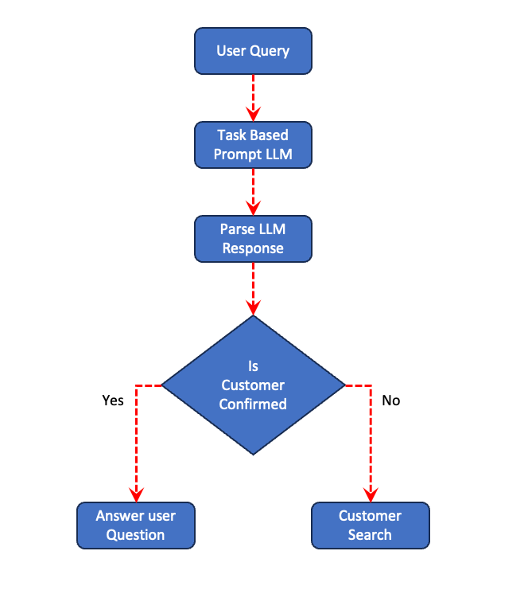

Research / HCII 2025 Posters
Bridging UI Design and Chatbot InteractionsApplying Form-Based Principles to Conversational Agents
HCI International 2025 Posters · Communications in Computer and Information Science 2529 · pp. 223–231 · Springer, Cham
Abstract
Domain-specific chatbot applications often involve multi-step interactions, such as refining search filters, selecting multiple items, or performing comparisons. Traditional graphical user interfaces (GUIs) handle these workflows by providing explicit “Submit” (commit data) and “Reset” (discard data) actions, allowing back-end systems to track user intent unambiguously. In contrast, conversational agents rely on subtle language cues, which can lead to confusion and incomplete context management. This paper proposes modeling these GUI-inspired metaphors—acknowledgment (submit-like) and context switching (reset-like)—as explicit tasks within large language model (LLM) prompts. By capturing user acknowledgment, reset actions, and chain-of-thought (CoT) reasoning as structured session data, we preserve clarity, reduce user confusion, and align domain-specific chatbot interactions with back-end logic. We demonstrate our approach in hotel booking and customer management scenarios, highlighting improvements in multi-turn task coherence, user satisfaction, and efficiency.
The idea, in practice
Make acknowledgment and context changes explicit, so a chatbot can distinguish continuing a task from starting a different one.
- Represent acknowledgment and context switching as explicit tasks in the prompt.
- Parse a structured action label to decide whether to keep the current context, reset it, or ask for clarification.
- Keep conversational intent connected to application state in multi-step customer and hotel-booking workflows.

Try the idea
Try a follow-up, an ambiguous correction, and an explicit customer switch.
This is a later illustrative implementation using AgentFootprint and FootPrint. It does not reproduce the original paper’s experiments. Sample replies are scripted; live replies come from Anthropic.
The context desk
Runs in your browserStart with the sample at no API cost. Live mode sends your question and the fictional current-customer name to Anthropic and uses your API credits. No real customer or hiring system is connected.
Use your Anthropic key · optional
Your key is held only in this tab’s memory and sent only to api.anthropic.com. It is not saved in browser storage, included in run exports, or sent to this website’s host. Reloading or selecting “Forget key” clears it.
No key added.
Each run permits up to six API requests, with up to 500 output tokens per request. A comparison is another run. API availability and model access depend on your Anthropic account.
Loading the playground…
Question:
Decision summary
Ambiguous requests keep the current customer until the intent is clarified.
Recorded activity
Runtime: AgentFootprint 7.7.0 · FootPrint 9.11.0. Playground source and build instructions. The live classifier returns an action label and a brief user-facing summary; it does not request hidden chain-of-thought.
Scope & limitations
The paper presents a prompting and interaction approach with illustrative scenarios and preliminary evaluation. Correctly recognizing ambiguous intent remains a limitation. This playground uses fictional customer names and a simplified action-label classifier; it is not the original experimental system.
Cite the paper
Author names above follow arXiv metadata. The publisher and author PDF spell Xinrui Nie as “Xinrui Nei”; the formal citation and bibliographic metadata here preserve that published spelling.
@inproceedings{anbalagan2025bridging,
author = {Anbalagan, Sanjay Krishna and Nei, Xinrui and Mohan, Umesh and Kanamarlapudi, Vijay Kumar and Kommalapati, Anughna and Zhao, Xiaodan},
title = {Bridging UI Design and Chatbot Interactions: Applying Form-Based Principles to Conversational Agents},
booktitle = {HCI International 2025 Posters},
series = {Communications in Computer and Information Science},
volume = {2529},
pages = {223--231},
year = {2025},
publisher = {Springer Nature Switzerland},
address = {Cham},
doi = {10.1007/978-3-031-94171-9_19},
url = {https://doi.org/10.1007/978-3-031-94171-9_19},
note = {Author manuscript: https://arxiv.org/abs/2507.01862}
}